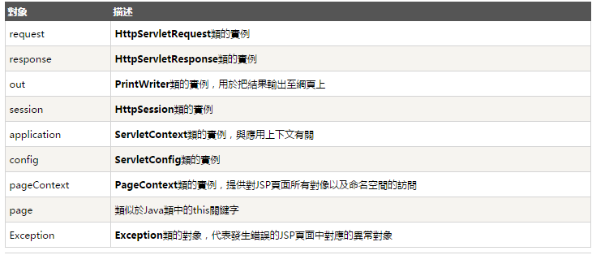

JSP 標籤與隱含物件注意
Posted on Wed 11 February 2015 in Java
原來在寫 JSP 時要依據使用的標籤，需要考慮到隱含物件的名稱，否則會發生衝突並產生 Duplicate Local Variable，以下紀錄筆記。
前言
前陣子在寫 Java Servlet 的範例，作為提供給客戶參考如何以 Java 程式呼寫的 WebService。但是到現場才發現客戶是使用 JSP，因為當時自己本身是寫 C# 與 .Net 於是不熟悉 JSP，為了解決客戶的需要仍硬著頭皮，在對方現有的程式碼大海中想辦法銜接，也因此遇到了這個問題。
原來在寫 JSP 時要依據使用的標籤，需要考慮到隱含物件的名稱，否則會發生衝突並產生 Duplicate Local Variable，雖然現場當下解決，但也學到了一些知識所以紀錄筆記一下避免以後發生。
JSP 與 Servlet 關係 以及 JSP 的標籤
JSP 在被執行前，是被 JSP 編譯器編譯成 Java Servlets。而一個 JSP 編譯器可以把 JSP 編譯成 Java 程式寫的 servlet 然後再由 Java 編譯器來編譯成機器碼，也可以直接編譯成二進位碼。所以在撰寫 JSP 時，會跟 Servlet 有關係。
而 JSP 的標籤主要分成三類(以下資料來自良葛格的文章)：
1. 宣告（ Declaration ）標籤
- 標籤符號：
<%! 類別成員宣告或方法宣告 %> - 標籤功能：在之間宣告的程式碼，都將轉譯為 Servlet 中的類別成員或方法
- 標籤範例：
<%!
String name = "caterpillar";
String password = "123456";
boolean checkUser(String name, String password) {
return this.name.equals(name) &&
this.password.equals(password);
}
%>
轉換為 Servlet 後為：
package org.apache.jsp;
// 略...
public final class index_jsp extends org.apache.jasper.runtime.HttpJspBase implements org.apache.jasper.runtime.JspSourceDependent {
String name = "caterpillar";
String password = "123456";
boolean checkUser(String name, String password) {
return this.name.equals(name) &&
this.password.equals(password);
}
// 略...
2. Scriptlet 指令標籤
標籤符號：<% Java 陳述句 %>
標籤功能：在標籤之間所包括的內容，將被轉譯為 Servlet 原始碼 _jspService() 方法中的內容
標籤範例：
<%
String name = request.getParameter("name");
String password = request.getParameter("password");
if(checkUser(name, password)) {
%>
<h1>登入成功</h1>
<%
}
else {
%>
<h1>登入失敗</h1>
<%
}
%>
這段 JSP 中的 Scriptlet，在轉譯為 Servlet 後，會有以下對應的原始碼：
package org.apache.jsp;
// 略...
public final class login_jsp
extends org.apache.jasper.runtime.HttpJspBase
implements org.apache.jasper.runtime.JspSourceDependent {
// 略...
public void _jspService(HttpServletRequest request,
HttpServletResponse response)
throws java.io.IOException, ServletException {
// 略…
String name = request.getParameter("name");
String password = request.getParameter("password");
if(checkUser(name, password)) {
out.write("\n");
out.write(" <h1>登入成功</h1>\n");
}
else {
out.write("\n");
out.write(" <h1>登入失敗</h1>\n");
}
// 略...
}
}
3. 運算式（ Expression ）標籤
標籤符號：<%= Java運算式 %>
標籤功能：運算式元素中撰寫 Java 運算式，運算式的運算結果將直接輸出為網頁的一部份。
標籤範例：
現在時間: <%= new Date() %>
這個運算式元素在轉譯為 Servlet 之後，會在 _jspService() 中產生以下的陳述句：
out.print(new Date());
解說
而上述在 JSP 轉換成 Servlet 的過程中，便會有些物件被自動產生，這些物件的名稱與生命週期使用都被定義，並且存在於 Servlet 中的方法 _jspService() 裡，這些物件被稱為隱含物件，如下表：

因此當使用 JSP 標籤時要小心。
如果是使用 Scriptlet 元素的標籤：<% Java 陳述句 %>，要注意使用的變數和物件名稱，因為其轉換時，JSP 撰寫的程式會轉換至 _jspService() 裡，因此上述的隱含物件名稱如：request、response ... 等名稱會存在。
若是自己開發的 JSP 網頁中，使用 Scriptlet 元素的標籤也使用上述一樣的名稱，便會出現錯誤 Duplicate Local Variable 的錯誤，因此請記得避開這些名稱。
而若是使用 宣告（Declaration）元素的標籤：<%! 類別成員宣告或方法宣告 %>，由於在轉換成 Servlet 時是 Servlet 得成員變數或方法，所以不會與 _jspService() 裡的隱含物件衝突到。